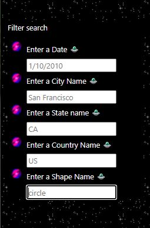

Project Example 2
Here is a page created during the Berkeley Data Analysis Bootcamp as one of the challanges. To create this page the following tools have been used- HTML,
- CSS,
- JavaScript,
- Visual Studio Code,
- Github,
- MongoDB
- Flask

Information about project
Background Info;
Dana is a data journalist and she is given the opportunity to write about her hometown McMinnville, Oregon. The town is famous with UFO sightings and she is facinated by the topic. After deciding to write about the topic she has collected some data about the sigthings like dates the objects has been seen, place they have been seen, the shape of the objects described by the people and comments.
Click here to see the json dataPutting this to a regular web page will make it hard for the viewers to find the right data instead she decided to usejavascript and html together to create interactive dashboard for the site visiters.
She already knows using html and css she can create only flat web pages but she wants to have an interactive dashboard with filtering options. In order to do that she decided to add javascript to the picture. Javascript is a front end devepomnet language which means extra funcionality and enhancing the user experiance. Javascript has several futures specifically useful for data anlysis like creating dashboards, buttons, dropdown-boxes...by adding javascript we are creating a "dynamic web page"
The Idea
So the idea is to create a interactive web page using javascript, html, and css together. In that page, she will have a big table with all the information in it, next to the table she will include filters to pull out specific data. Visitors can enter a specific date, or a specific city, or a specific state, or a specific country or a specific shape name to get the list of data they are looking for.